Loading required package: sysfontsLoading required package: showtextdbLoading required package: sysfontsLoading required package: showtextdb绘制下列向量（序列）的直方图,为直方图填充你喜爱的颜色。
set.seed(123)
x <- runif(1000)
hist(x, breaks = 20,col = 5,
main = "Histogram of U(0,1)",
ylim = c(0,80),
yaxt = "n"
)
# 设置 Y 轴刻度
axis(side = 2, las = 1,at = seq(0, 80, 20),
labels = seq(0, 80, 20),font = 0.5)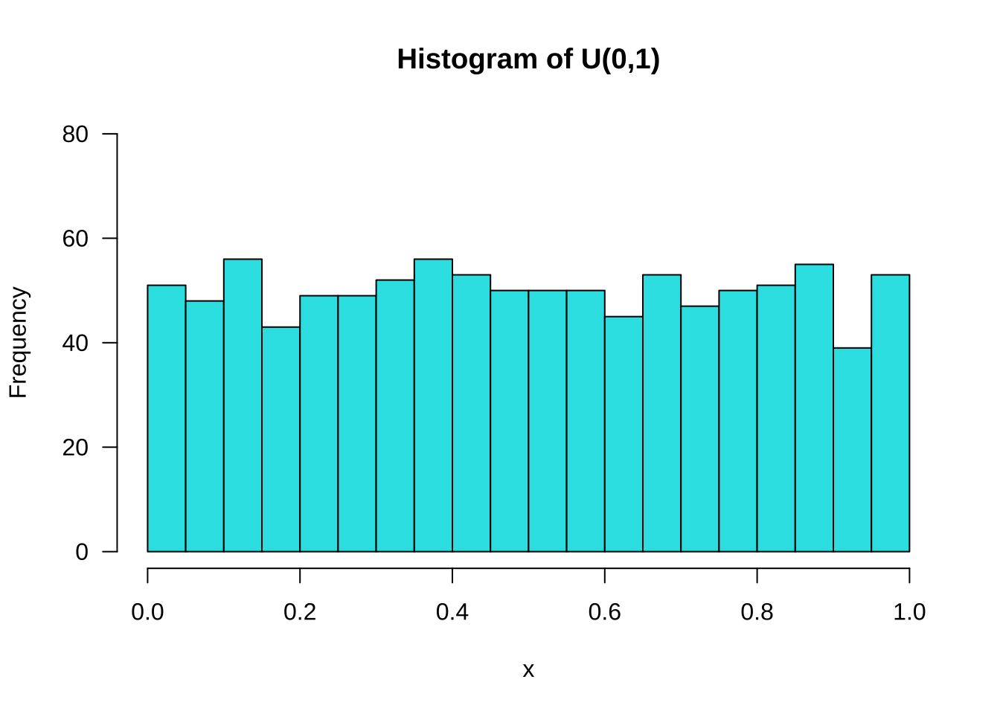
set.seed(123)
x <- rnorm(1000)
hist(x, main = "Histogram of N(0,1)", col = 5,
ylim = c(0,240),
xlim = c(-4,4),
yaxt = "n")
# 设置 Y 轴刻度
axis(side = 2,las = 1, at = seq(0, 240, 20),
labels = seq(0, 240, 20),font = 0.5)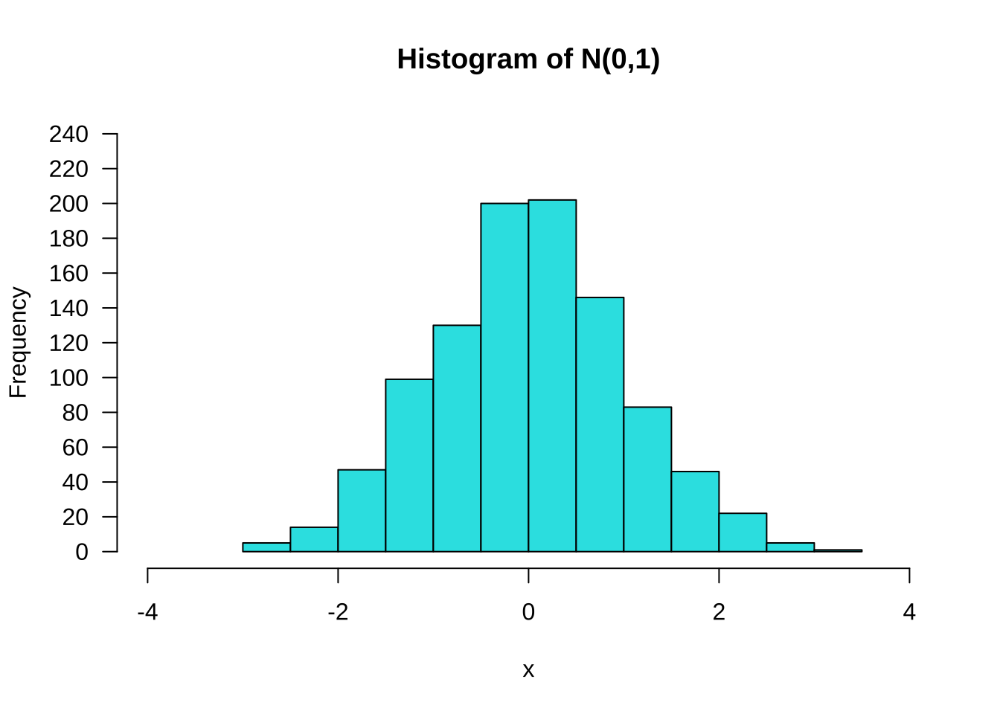
set.seed(123)
x <- rnorm(1000, 80, 5)
hist(x, main = "Histogram of N(80,5)", col = 5,
ylim = c(0,240),
xlim = c(60,100),
yaxt = "n")
# 设置 Y 轴刻度
axis(side = 2,las = 1, at = seq(0, 240, 40),
labels = seq(0, 240, 40),font = 0.5)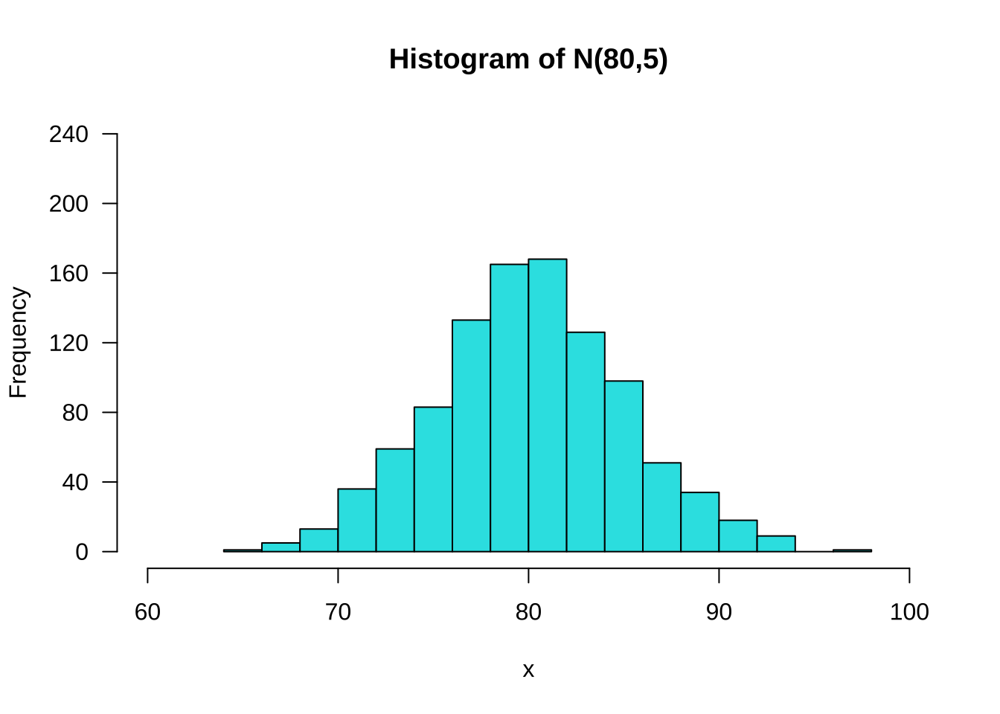
set.seed(123)
x <- rchisq(1000, 5)
hist(x, col = 5, breaks = 20,
main = expression(paste("Histogram of ",chi^2, "(5)")),
ylim = c(0,200),
xlim = c(0,20),
yaxt = "n")
# 设置 Y 轴刻度
axis(side = 2, las = 1,at = seq(0, 200,20),
labels = seq(0, 200, 20),font = 0.5)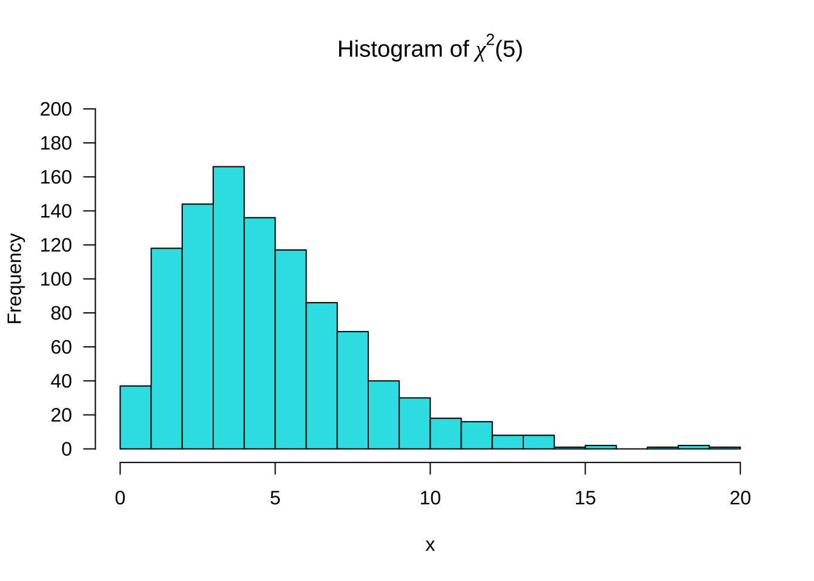
set.seed(123)
x <- rt(1000, 5)
hist(x, main = "Histogram of t(5)", col = 5,
ylim = c(0,200),
xlim = c(-6,6),
breaks = 20,
yaxt = "n")
# 设置 Y 轴刻度
axis(side = 2, las = 1,at = seq(0, 200, 40),
labels = seq(0, 200, 40),font = 0.5)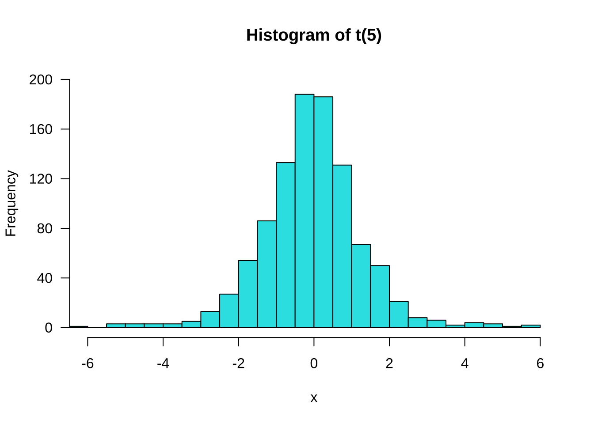
set.seed(123)
x <- rf(1000, 5,10)
hist(x,breaks = 50,col = 5,
main = "Histogram of F(5,10)",
ylim = c(0,350),
xlim = c(0,17),
yaxt = "n")
# 设置 X 轴刻度
axis(side = 1,las = 1, at = seq(0, 17, 1),
labels = seq(0, 17, 1),font = 0.5)
# 设置 Y轴刻度
axis(side = 2,las = 1, at = seq(0, 350, by = 50),
labels = seq(0, 350, by = 50),font = 0.5)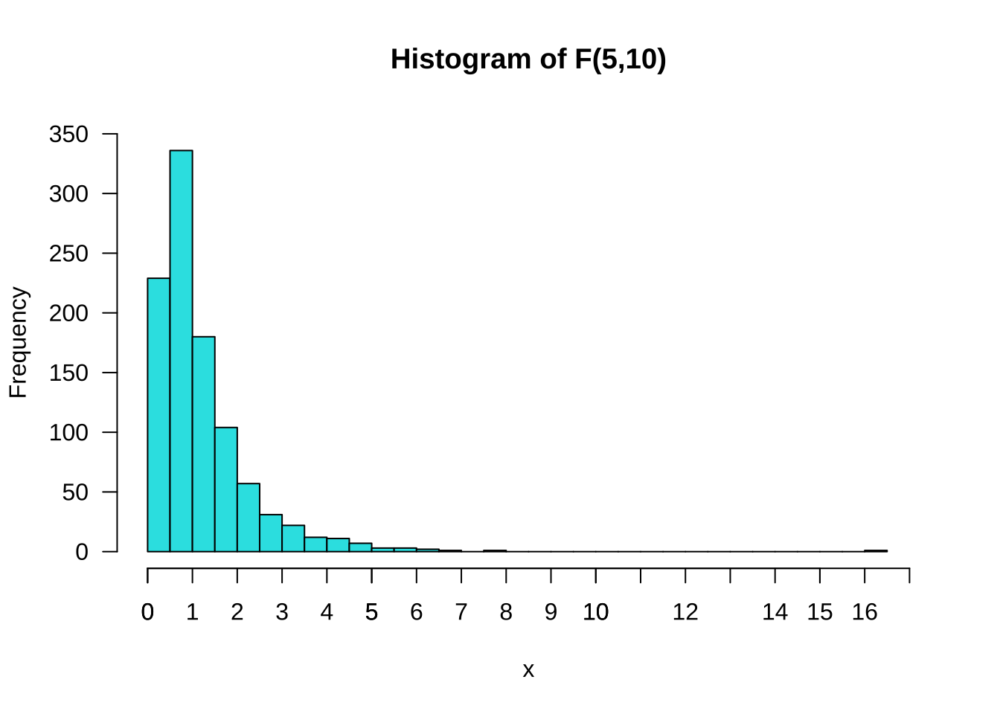
数据集：mtcars
min(mtcars$qsec)[1] 14.5max(mtcars$qsec)[1] 22.9qsec.hist <- hist(mtcars$qsec, breaks = seq(14,23,1), col =5,
xlim = c(14, 24),
ylim = c(0,15),
main = "Histogram of 1/4 Mile Time",
xlab = "Seconds",
ylab = "Freq",
yaxt = "n") # 不显示Y轴刻度
# 设置X轴刻度
axis(las = 1, # 设置标签方向
side = 1, # 设置刻度位置, 1表示X轴, 2表示Y轴, 3表示上X轴, 4表示右Y轴
at = c(14:24), # 设置刻度位置
labels = c(14:24),# 设置刻度标签
font = 0.5) # 设置刻度标签字体大小
# 设置 Y轴刻度
axis(side = 2, las = 1,at = c(1:12),
labels = c(1:12),font = 0.5)
text(qsec.hist$mids, # 设置标签横坐标
qsec.hist$counts + 1, # 设置标签纵坐标
label = qsec.hist$counts, # 设置标签内容
cex = 0.8) # 设置标签字体大小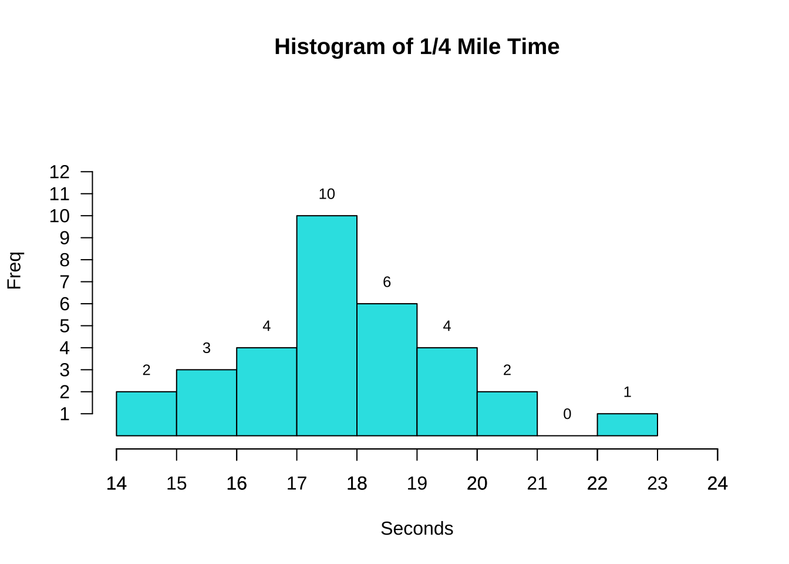
qsec.hist <- hist(mtcars$qsec,
breaks = seq(14,23,1), # 设置组距
col =5, # 设置颜色
freq = F, # 设置为频率直方图
xlim = c(14,24),
ylim = c(0,0.4),
main = "Histogram of 1/4 Mile Time",
xlab = "QSEC",
yaxt = "n") # 不显示Y轴刻度
lines(density(mtcars$qsec), # 添加概率密度曲线
lwd = 2, # 设置线宽
col = 2)
# 设置Y轴刻度
axis(side = 2,
las = 1,
at = seq(0,0.4,0.1), # 设置刻度位置
labels = seq(0,0.4,0.1), # 设置刻度标签
font = 0.5)
text(qsec.hist$mids, # 设置标签横坐标
qsec.hist$density + 0.02, # 设置标签纵坐标
label = qsec.hist$counts, # 设置标签内容
cex = 0.8)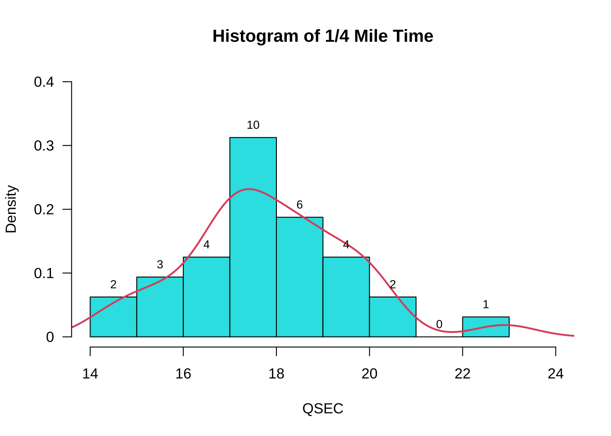
#查看mtcars$wt最大值和最小值，以便设置合理的刻度范围
min(mtcars$wt)[1] 1.513max(mtcars$wt)[1] 5.424wt.hist <- hist(mtcars$wt,
breaks = seq(1,6,1),
col =5,
xlim = c(1,6),
ylim = c(0,18),
main = "Histogram of Weight (1000 lbs)",
xlab = "Weight",
yaxt = "n") # 不显示Y轴刻度
# 设置 Y轴刻度
axis(side = 2, # 2代表Y轴
las = 1, # 设置标签方向
at = seq(0,18,3), # 设置刻度位置
labels = seq(0,18,3), # 设置刻度标签，通常与刻度位置一一对应
font = 0.5)
text(wt.hist$mids, # 设置标签横坐标
wt.hist$counts + 1, # 设置标签纵坐标
label = wt.hist$counts, #
cex = 0.9) # 设置标签字体大小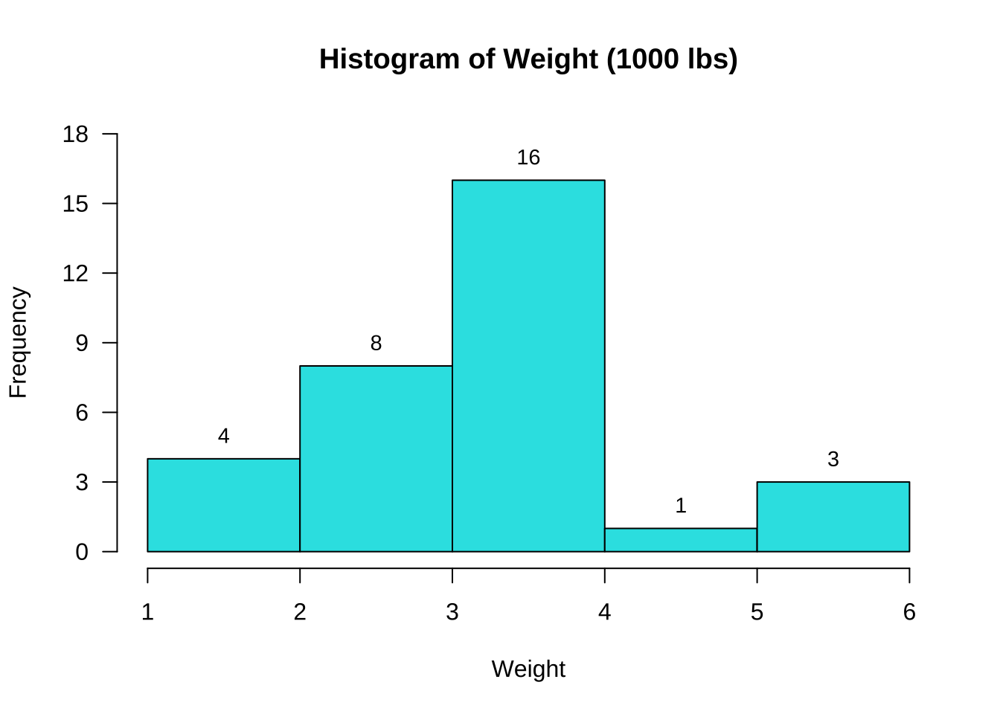
vs.table <- table(mtcars$vs) # 统计vs的频数
vs.barplot <- barplot(vs.table, # 绘制条形图
col = c(3,4), # 设置两个条形的颜色分别为3和4
ylim = c(0,20), # 设置Y轴刻度范围
density = 20, # 设置条纹填充密度
angle = 45, # 设置条纹填充角度
width = 0.1, # 设置条形宽度
space = 0.5, # 设置条形间距
main = "Barplot of Engine",
xlab = "Type of Engine",
ylab = "Frequency",
names.arg = c("V-shaped", "Straight"), # 设置条形标签
las = 1) # 设置标签方向
text(vs.barplot, # 设置标签横坐标
vs.table+1.5, # 设置标签纵坐标， +1.5是为了让标签显示在条形上方
labels = vs.table) # 设置标签内容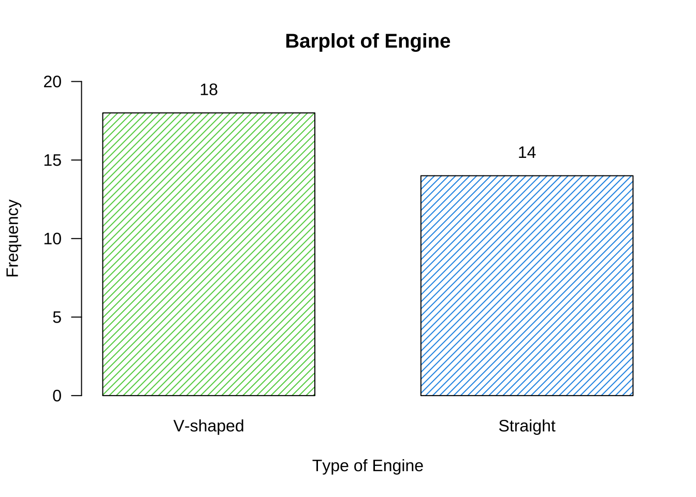
am.table <- table(mtcars$am) # 统计am的频数
am.barplot <- barplot(am.table,
col = c(3,4), # 设置两个条形的颜色分别为3和4
ylim = c(0,2), # 设置Y轴刻度范围
xlim = c(0,20),# 设置X轴刻度范围
names.arg = c("V-shaped", "Straight"), # 设置条形标签
horiz = T, # 设置条形水平放置
las = 1, # 设置标签方向
cex.axis = 0.8, # 设置坐标轴标签字体大小
cex.names = 0.8, # 设置条形标签字体大小
cex.lab = 0.8, # 设置坐标轴标签字体大小
xlab = "Freq", # 设置X轴标签
main = "", # 设置图形标题为空，删掉图形默认标题
width = c(0.4,0.4) # 设置条形宽度
)
text(am.table+0.7, # 设置标签横坐标，+0.7 是为了让标签显示在条形右侧
am.barplot, # 设置标签纵坐标
labels = am.table, # 设置标签内容
cex = 0.8) # 设置标签字体大小
title(main = "Barplot of Transmission", # 设置图形标题
line = -5) # 设置标题位置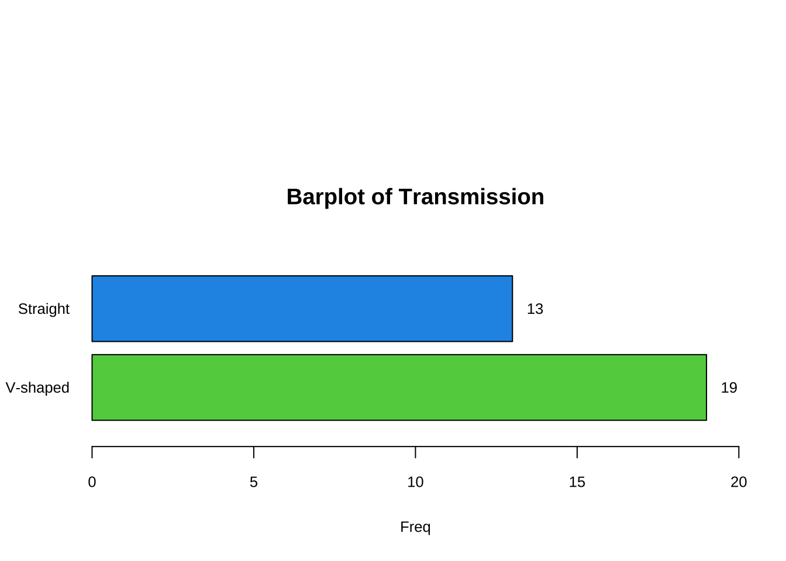
#计算engine各个类别的频数
am.table <- table(mtcars$am) # 统计am的频数
#计算am各个类别的百分比
am.percent <- table(mtcars$am)/sum(table(mtcars$am))*100 # 计算百分比
# 定义标签
label1 <- c("Automatic","Manual") # 设置标签label1内容
label2 <- paste0(round(am.percent,2),"%") # 设置标签label2内容
#设置扇区角度
pie(am.percent,
main = "Pie Chart of Transmission",
init.angle=90, # 设置初始角度
col=c(4,5), # 设置扇区颜色
labels=paste(paste(label1,label2))) # 设置标签内容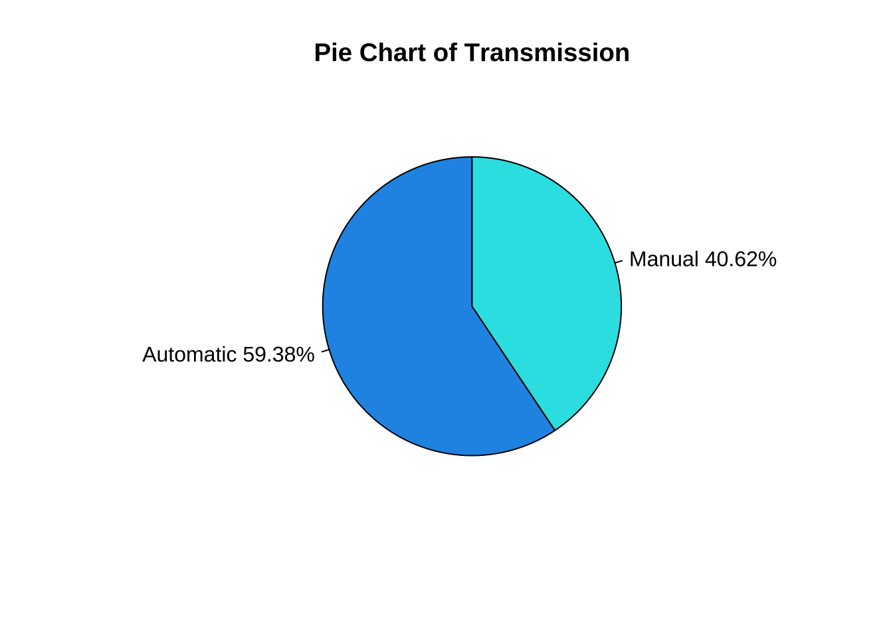
wt.bp <- boxplot(mtcars$wt,
horizontal = T, # 设置箱线图水平放置
col = 5, # 设置箱线图颜色
main = "Boxplot of Weight",
height = 2, # 设置箱线图高度
xaxt = "n") # 不显示X轴刻度
axis(side = 1, # 1代表X轴
at = seq(1.5,6,0.5), # 设置刻度位置
labels = seq(1.5,6,0.5)) # 设置刻度标签
# 在箱线图上添加标签
text(x = wt.bp$stats[1], # 标记最小值，设置该标签横坐标
y = 0.8, # 设置标签纵坐标
labels =wt.bp$stats[1], # 设置标签内容
cex = 0.8) #
text(x = wt.bp$stats[2]-0.1, # 标记Q1，设置该标签横坐标，-0.1代表 是为了让标签显示在箱线左侧
y = 0.7, # 设置标签纵坐标
labels =paste("Q1 =",round(wt.bp$stats[2],3)), # 设置标签内容
cex = 0.8) # 设置标签字体大小
text(x = wt.bp$stats[3]-0.1, # 标记中位数，设置该标签横坐标，-0.1代表 是为了让标签显示在箱线左侧
y = 1.3,
labels =paste("Median =",wt.bp$stats[3]),
cex = 0.8)
text(x = wt.bp$stats[4]+0.1, # 标记Q3，设置该标签横坐标，+0.1代表 是为了让标签显示在箱线右侧
y = 0.7,
labels =paste("Q3 =", wt.bp$stats[4]),
cex = 0.8)
text(x = wt.bp$stats[5], # 标记除了outlier之外的最大值，设置该标签横坐标
y = 0.8,
labels =wt.bp$stats[5],
cex = 0.8)
text(x = max(mtcars$wt), # 标记最大值，设置该标签横坐标
y = 1.1,
labels =max(mtcars$wt), cex = 0.8)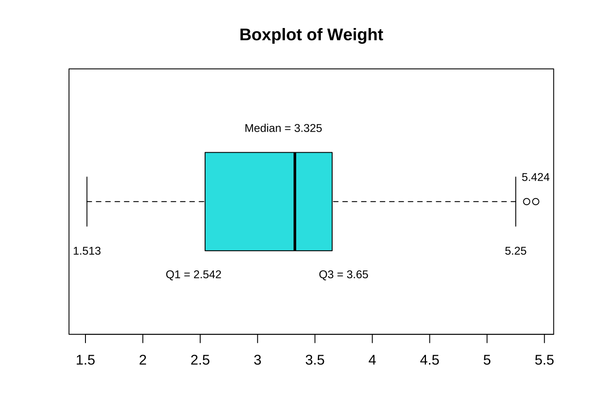
sort(mtcars$wt) [1] 1.513 1.615 1.835 1.935 2.140 2.200 2.320 2.465 2.620 2.770 2.780 2.875
[13] 3.150 3.170 3.190 3.215 3.435 3.440 3.440 3.440 3.460 3.520 3.570 3.570
[25] 3.730 3.780 3.840 3.845 4.070 5.250 5.345 5.424boxplot(mtcars$wt ~ mtcars$am, # 按am分组，绘制wt的箱线图
horizontal = T, # 设置箱线图水平放置
col = c("cyan", "purple"), # 设置箱线图颜色
main = "Boxplot of Weight",
ylab = "", # 设置Y轴标签为空
xaxt = "n", # 不显示X轴刻度
yaxt = "n") # 不显示Y轴刻度
axis(side = 1, # 1代表X轴
at = seq(1.5,6,0.5), # 设置刻度位置
labels = seq(1.5,6,0.5), # 设置刻度标签
cex.axis = 0.8, # 设置刻度标签字体大小
font = 2) # 设置刻度标签字体
axis(side = 2, # 2代表Y轴
las = 1, # 设置刻度标签方向
at = c(1,2), # 设置刻度位置
labels = c("automatic","manual"), # 设置刻度标签
cex.axis = 0.8, # 设置刻度标签字体大小
font = 2) # 设置刻度标签字体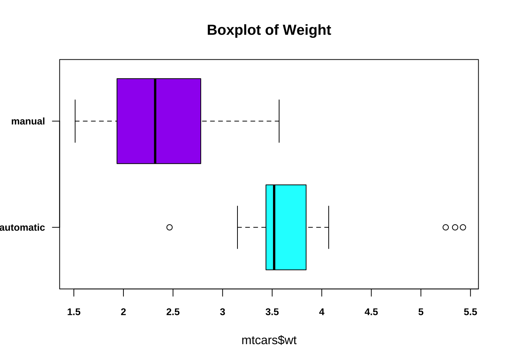
boxplot(mtcars$qsec ~ mtcars$am, # 按am分组，绘制qsec的箱线图
horizontal = T, # 设置箱线图水平放置
col = c(4,5), # 设置箱线图颜色
main = "Boxplot of 1/4 Miles Time", # 设置箱线图标题
ylab = "", # 设置Y轴标签为空
xaxt = "n", # 不显示X轴刻度
yaxt = "n") # 不显示Y轴刻度
axis(side = 1, # 1代表X轴
at = c(14:23), # 设置刻度位置
labels = c(14:23), # 设置刻度标签
cex.axis = 0.8, # 设置刻度标签字体大小
font = 2) # 设置刻度标签字体
axis(side = 2, # 2代表Y轴
las = 1, # 设置刻度标签方向
at = c(1,2), # 设置刻度位置
labels = c("automatic","manual"), # 设置刻度标签
cex.axis = 0.8, # 设置刻度标签字体大小
font = 2) # 设置刻度标签字体
sort(mtcars$qsec) [1] 14.50 14.60 15.41 15.50 15.84 16.46 16.70 16.87 16.90 17.02 17.02 17.05
[13] 17.30 17.40 17.42 17.60 17.82 17.98 18.00 18.30 18.52 18.60 18.61 18.90
[25] 18.90 19.44 19.47 19.90 20.00 20.01 20.22 22.90